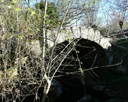
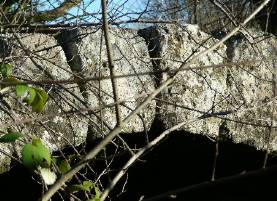
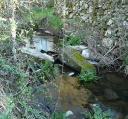
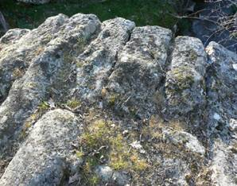

Puente de la Media Legua
(Coordenadas UTM 30T 263.094-4.475.935)
Este puente se encuentra en el camino histórico de la Calzada de Béjar a Béjar, al atravesar el Arroyo Hontoria.
Este camino iba (hoy día cortado por un particular) desde Béjar a la Calzada Romana de la Plata,permitiendo visitar sus valores artísticos asociados como el Fortín Romano, de gran potencial turístico y senderista
El Puente de la Media Legua tiene suficiente valor arquitectónico , histórico y artístico como para incluirlo en el CATALOGO DE ELEMENTOS ARQUITECTÓNICOS DE INTERÉS . Aunque la época de su construcción no está suficientemente aclarada,afirmando algunos su origen romano, lo más cierto es que su origen es medieval.
 |
 |
| Puente de la Media Legua | Detalle de las dovelas |
 |
 |
| Dovelas derribadas por crecida | Vista superior |
La inclusión en este Catálogo permitiría una protección que ayudaría a su conservación y rehabilitación, al encontrarse en estado precario con varias de sus dovelas caídas en el cauce del arroyo.